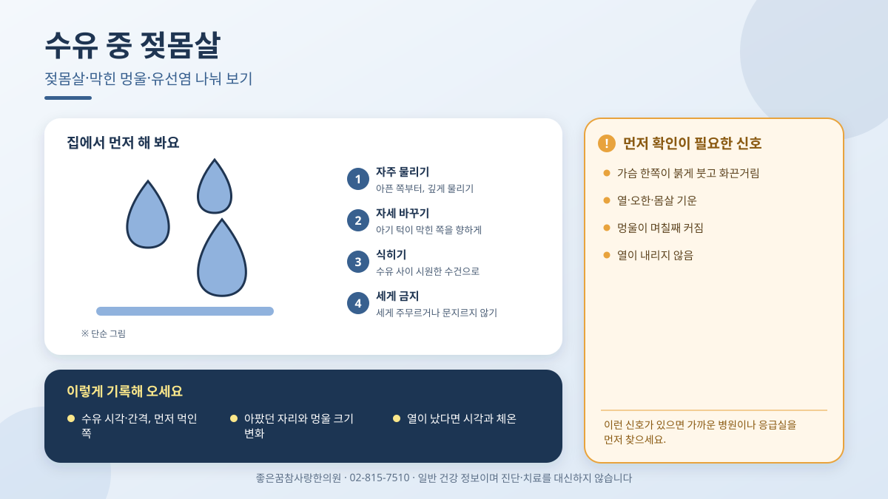

이종호 한의사 감수좋은꿈참사랑한의원 대표원장 (한의사 면허번호 19769)발행 2026-11-26 · 수정 2026-11-26
이 글의 차례
새벽에 아기 울음소리에 깨어 몸을 일으키는데, 가슴이 돌덩이처럼 단단하고 묵직합니다. 브래지어가 닿기만 해도 아프고, 겨드랑이 쪽까지 욱신거립니다. 아기가 젖을 물려고 해도 가슴이 너무 팽팽해 자꾸 미끄러지고, 아기는 더 크게 웁니다. 울고 싶은 건 엄마도 마찬가지입니다.
젖몸살은 수유를 시작한 많은 분이 겪는 일입니다. 그런데도 막상 겪으면 당황스럽습니다. 이렇게 아픈 게 정상인지, 젖을 계속 물려도 되는지, 병원에 가야 하는지 판단하기 어렵기 때문입니다. 밤중이라 물어볼 곳도 마땅치 않습니다.
진료실에서 저는 먼저 지금의 가슴 통증이 어떤 종류인지 함께 나누어 봅니다. 젖이 한꺼번에 차서 붓는 젖몸살인지, 한 군데 젖이 막혀 멍울이 생긴 것인지, 염증이 생긴 유선염인지에 따라 해야 할 일과 서둘러야 할 정도가 달라지기 때문입니다.
이 글에서는 수유 중 가슴 통증의 흔한 종류와 원인, 집에서 먼저 해 볼 수 있는 것, 산부인과나 모유수유 상담을 먼저 받아야 하는 경우, 그리고 한의원에서 함께 살필 수 있는 부분을 차례로 정리했습니다.
수유 중 가슴 통증에는 어떤 종류가 있나요?
젖몸살은 대개 출산 뒤 며칠 안에 젖이 본격적으로 돌기 시작할 무렵 찾아옵니다. 양쪽 가슴이 전체적으로 단단하게 붓고 뜨겁고 무겁습니다. 젖이 만들어지는 양이 아기가 먹는 양보다 앞서고, 가슴 속 혈관과 림프의 흐름도 함께 늘어나면서 생기는 붓기입니다.
젖이 막힌 멍울은 한쪽 가슴의 한 자리에 단단한 덩어리가 만져지고 그 자리가 아픈 경우입니다. 수유 간격이 길어졌거나, 꽉 끼는 속옷이나 아기 띠 끈이 한 자리를 오래 눌렀거나, 아기가 한쪽 방향으로만 먹었을 때 잘 생깁니다. 수유 시기 어느 때나 생길 수 있습니다.
유선염은 젖이 고인 자리에 염증이 생긴 상태입니다. 가슴 한쪽이 붉게 부어오르고 화끈거리며, 몸에 열이 나고 오한이나 몸살 기운이 함께 옵니다. 이때는 집에서 버티기보다 산부인과 진료를 먼저 받아 보세요.
젖꼭지가 갈라지거나 헐어서 아픈 경우도 흔합니다. 이것은 대개 아기가 젖을 얕게 물어서 생기므로, 물리는 자세를 바로잡는 것이 먼저입니다. 젖꼭지 통증과 함께 가슴 깊은 곳이 찌르듯 아프다면 다른 원인을 함께 확인해 봅니다.
왜 수유 중에 젖몸살과 멍울이 생길까요
출산 뒤 며칠이 지나면 몸은 젖을 많이 만들라는 신호를 받습니다. 처음에는 아기가 얼마나 먹을지 몸이 아직 모르기 때문에 넉넉하게 만듭니다. 아기가 먹는 양과 몸이 만드는 양이 서로 맞춰지기까지 며칠에서 몇 주가 걸리는데, 그 사이 가슴이 넘치도록 차는 것이 젖몸살입니다.
젖은 자주, 충분히 빠져나가야 다음 젖이 순조롭게 만들어집니다. 수유 간격이 갑자기 길어지거나, 아기가 졸려서 조금만 먹고 잠들거나, 한쪽만 주로 먹이면 빠져나가지 못한 젖이 고입니다. 고인 젖은 주변을 붓게 하고 젖이 나오는 길을 더 좁게 만듭니다.
엄마의 몸 상태도 영향을 줍니다. 잠이 부족하고 긴장이 크면 젖이 나오도록 돕는 신호가 약해지고, 어깨와 가슴 앞쪽 근육이 굳으면 그 주변 흐름도 답답해집니다. 피곤한 날 멍울이 잘 생긴다고 말씀하시는 분이 많은 것도 그래서입니다.
한의학에서는 출산 뒤 기운과 혈이 크게 쓰인 상태에서 흐름이 막히고 열이 뭉친 모습으로 젖몸살을 이해합니다. 그래서 가슴만 보지 않고 잠과 긴장, 소화, 몸의 열을 함께 살핍니다.
젖몸살과 멍울, 유선염은 어떻게 나눠 볼까요?
양쪽 가슴이 전체적으로 단단하고 무겁지만 몸에 열은 없고, 수유하고 나면 조금 말랑해진다면 젖몸살일 가능성이 큽니다. 출산 뒤 며칠에서 첫 몇 주 사이에 흔하고, 아기가 자주 충분히 먹으면서 대개 차츰 가라앉습니다.
한쪽 가슴의 한 자리에 콩알이나 메추리알만 한 단단한 덩어리가 만져지고 그 자리만 아프다면 젖이 막힌 멍울을 먼저 생각합니다. 몸에 열이 없고, 수유를 이어 가며 하루 이틀 사이에 작아지는 경우가 많습니다.
가슴 한쪽이 붉게 부어오르며 화끈거리고, 몸에 열이 나며 으슬으슬 춥고 몸살이 난 것처럼 온몸이 아프다면 유선염을 생각합니다. 멍울이 며칠째 줄지 않거나 점점 커지면서 말랑하게 고름이 찬 느낌이 든다면 미루지 말고 산부인과에서 확인받으세요.
수유와 관계없이 아프지 않은 단단한 덩어리가 계속 만져지거나, 피부가 귤껍질처럼 움푹 들어가거나, 젖꼭지에서 피 섞인 분비물이 나온다면 수유 중이라도 유방 검사를 받아 보시길 권합니다.
수유 자세, 이렇게 바꿔 보세요
요람처럼 안는 자세는 가장 익숙하지만, 오래 이어지면 엄마의 등이 굽고 아기는 가슴 아래쪽을 주로 비웁니다. 옆구리에 끼듯 안는 자세는 가슴 바깥쪽과 겨드랑이 쪽 젖을 비우는 데 도움이 되고, 제왕절개로 배가 당기는 분에게도 편합니다.
옆으로 누워 먹이는 자세는 밤중 수유 때 엄마가 조금이라도 쉴 수 있게 해 줍니다. 다만 아래쪽 가슴만 계속 먹이게 되기 쉬우니, 다음 수유 때는 반대쪽으로 돌아누워 균형을 맞춰 주세요.
어느 자세든 아기를 가슴 쪽으로 가져오는 것이 핵심입니다. 엄마가 몸을 숙여 가슴을 아기에게 가져가면 어깨와 등이 금세 지칩니다. 수유 쿠션이나 베개로 아기 높이를 올리고, 등 뒤와 팔 아래에도 쿠션을 받쳐 보세요.
수유를 마칠 무렵의 가슴
수유를 마치는 시기에도 가슴이 땡기고 멍울이 생기기 쉽습니다. 한 번에 끊기보다 하루에 한 번씩 수유 횟수를 줄여 가며 며칠에서 몇 주에 걸쳐 천천히 마치면 가슴이 덜 붓습니다.
이 시기에 가슴이 너무 팽팽하면 편해질 정도까지만 조금 짜 주고, 시원한 수건으로 열감을 가라앉힙니다. 완전히 비우려고 하면 다시 많이 만들라는 신호가 되니 조금씩만 덜어 주세요. 기분이 함께 가라앉는다면 그 이야기도 들려주세요.
먼저 이렇게 여쭙니다
처음 오시면 저는 대략 이런 순서로 여쭙니다. 미리 생각해 오시면 이야기가 훨씬 수월해집니다.
- 출산은 언제 하셨고, 모유만 먹이시나요, 분유와 함께 먹이시나요?
- 하루 수유 횟수와 가장 길게 비는 간격은 어느 정도인가요?
- 아픈 곳은 양쪽 전체인가요, 한쪽의 한 자리인가요?
- 가슴이 붉거나 뜨겁고, 몸에 열이 나거나 오한이 있나요?
- 유축기를 쓰신다면 하루 몇 번, 얼마나 짜시나요?
- 밤에 몇 번 깨고, 식사와 물은 얼마나 챙기시나요?
모든 질문에 정확히 답하지 못하셔도 괜찮습니다. 아픈 자리와 열이 나는지만 알려 주셔도 먼저 어디로 가야 할지 함께 정할 수 있습니다.
산부인과나 소아청소년과에서 수유에 관해 들은 이야기, 아기 몸무게가 잘 늘고 있는지, 아기가 젖을 무는 모습이 어떤지도 함께 여쭙니다. 수유는 엄마와 아기 둘이 함께 하는 일이라, 아기 쪽 이야기도 중요한 단서가 됩니다.
일상에서 먼저 해 볼 수 있는 것
젖몸살과 멍울은 젖이 고인 데서 시작하는 경우가 많아서, 젖이 잘 빠져나가게 돕는 것이 먼저입니다. 무엇보다 아프다고 수유를 갑자기 멈추면 젖이 더 고여 통증이 커질 수 있습니다.
- 아기가 원할 때 자주 물리고, 아픈 쪽부터 먼저 먹이기
- 젖을 깊게 물리도록 아기 입을 크게 벌린 뒤 가슴 가까이 당기기
- 수유 자세를 바꿔 가며 아기 턱이 막힌 쪽을 향하게 하기
- 가슴이 너무 팽팽해 물기 어려우면 손으로 조금 짜서 말랑하게 한 뒤 물리기
- 수유 사이에는 차가운 수건으로 붓기와 열감 가라앉히기
- 꽉 끼는 속옷, 아기 띠 끈이 가슴을 누르지 않게 하기
가슴을 세게 주무르거나 아픈 자리를 강하게 문지르는 것은 오히려 붓기와 염증을 키울 수 있습니다. 손으로 젖을 짤 때는 젖꼭지에서 조금 떨어진 둘레를 엄지와 검지로 부드럽게 눌렀다 놓는 정도로 하고, 아플 정도로 힘을 주지 않습니다.
따뜻한 찜질은 수유 직전에 짧게 하면 젖이 나오는 데 도움이 된다고 느끼는 분도 있지만, 붓기와 열감이 클 때 오래 하면 더 붓습니다. 붓고 뜨거울 때는 수유 사이에 시원하게 식혀 주는 쪽을 먼저 해 보세요.
유축기는 가슴이 너무 팽팽할 때 편해질 정도까지만 짜는 것이 좋습니다. 가슴을 완전히 비우겠다고 오래 짜면 몸은 더 많이 만들라는 신호로 받아들여 젖몸살이 길어질 수 있습니다. 흡입 세기는 아프지 않은 정도로 맞추세요.
엄마의 몸도 챙겨 주세요. 물을 수유할 때마다 한 컵씩 마시고, 끼니를 거르지 않으며, 아기가 잘 때 한 번은 함께 눕습니다. 잠과 긴장이 풀리면 젖이 나오는 흐름도 한결 부드러워집니다.
먹는 것에 대해서도 이런저런 말을 많이 들으실 겁니다. 젖이 잘 돌게 한다는 음식을 한꺼번에 많이 드시면 오히려 젖몸살이 심해지기도 합니다. 특별한 음식을 찾기보다 평소 식사를 고르게, 국과 물로 수분을 충분히 드시는 정도면 됩니다.
가족이 도와줄 수 있는 일도 있습니다. 밤중 수유 뒤 아기 트림과 기저귀를 대신 맡아 주면 엄마가 바로 다시 누울 수 있습니다. 엄마가 수유하는 동안 물과 간단한 간식을 손 닿는 곳에 놓아 주는 것만으로도 큰 도움이 됩니다.
한의원에서 함께 살필 수 있는 경우
- 젖몸살이나 멍울이 자주 반복되어 수유가 두려워진 경우
- 수유 자세 때문에 어깨, 목, 등, 손목이 함께 아픈 경우
- 잠이 쪼개진 뒤로 기운이 없고 쉽게 지치는 경우
- 몸에 열감이 있고 가슴 앞쪽과 어깨가 뻣뻣하게 굳은 경우
- 수유를 마치는 시기에 가슴이 땡기고 몸이 무거운 경우
좋은꿈참사랑한의원에 오시면 먼저 아래 '먼저 확인이 필요한' 신호가 없는지부터 봅니다. 열이 나고 가슴이 붉게 부어 있다면 산부인과 진료를 먼저 권합니다. 그렇지 않다면 맥을 짚고, 수유 자세와 어깨, 등, 가슴 앞쪽 근육이 어떻게 굳어 있는지 직접 확인합니다.
진찰한 내용을 바탕으로 수유 자세와 생활에서 바꿔 볼 것 하나와 함께 침, 부드러운 관리, 한약 상담 가운데 지금 상태에 맞는 것을 정합니다. 가슴 자체는 강하게 건드리지 않고, 어깨와 등처럼 수유로 지친 자리를 중심으로 봅니다.
한약은 수유 중이라는 것을 먼저 알려 주시면, 드시는 약을 모두 확인한 뒤 젖과 아기에게 미칠 영향까지 고려해 신중하게 정합니다. 산부인과에서 받은 약은 상의 없이 멈추지 않습니다. 다음 임신 가능성이 있다면 그것도 먼저 알려 주세요.
이렇게 기록해 오시면 상담이 쉬워집니다
수유 중 가슴 통증은 수유 간격과 자세에 따라 달라집니다. 사나흘만 간단히 적어 보세요.
- 수유 시각과 간격, 어느 쪽부터 먹였는지
- 유축한 시각과 양
- 아팠던 자리와 멍울의 크기 변화
- 열이 났다면 시각과 체온
- 밤에 깬 횟수와 낮에 누운 시간
- 드신 약과 영양제
기록을 보면 수유 간격이 길었던 날이나 한쪽만 먹인 날과 멍울이 생긴 날이 겹치는 경우가 많습니다. 그것이 다음 수유를 바꾸는 실마리가 됩니다.
아기가 한 번에 얼마나 오래 먹었는지, 젖을 삼키는 소리가 들렸는지도 짧게 적어 두면 좋습니다. 아기가 젖을 충분히 비우고 있는지 가늠하는 데 도움이 됩니다.
혼자 버티지 않아도 됩니다
젖몸살은 수유가 자리를 잡아 가는 과정에서 흔히 찾아오고, 대개 젖이 잘 빠져나가면서 가라앉습니다. 그래도 아픈 가슴으로 아기를 안는 일은 쉽지 않습니다. 산부인과, 모유수유 상담, 한의원 가운데 지금 필요한 곳에 도움을 청하세요.
이번 주에는 수유 자세 하나, 혹은 수유할 때마다 물 한 컵 마시기 하나만 골라 보세요. 다음에 오시면 수유 기록부터 함께 펼쳐 보겠습니다.
이런 증상은 먼저 확인이 필요합니다
- 가슴 한쪽이 붉게 부어오르고 화끈거리며, 몸에 열이 나고 오한과 몸살 기운이 함께 오는 경우
- 멍울이 며칠째 줄지 않고 커지거나 말랑하게 고름이 찬 느낌이 들고, 열이 내리지 않는 경우
이런 신호가 있으면 한의원보다 가까운 병원이나 응급실을 먼저 찾으세요.
함께 읽으면 좋은 글
- 출산 뒤 몸 회복, 관절·땀·잠·기분은 무엇부터 살피나요?
- 생리 전마다 가슴이 붓고 아픈 유방통은 어떻게 살피고, 언제 검사를 받아야 하나요?
- 출산 뒤 아기를 안다가 손목과 손가락이 아플 때는 어떻게 하나요?
- 아기를 안거나 휴대폰을 쥘 때 엄지 쪽 손목이 찌릿한 드퀘르뱅 건초염은 어떻게 살피나요?
- 출산 뒤 우울감과 불안이 몇 주째 이어질 때(산후 우울)는 어떻게 살피나요?

여쭙는 것
- 출산은 언제 하셨고, 모유만 먹이시나요, 분유와 함께 먹이시나요?
- 하루 수유 횟수와 가장 길게 비는 간격은 어느 정도인가요?
- 아픈 곳은 양쪽 전체인가요, 한쪽의 한 자리인가요?
생활에서 해 볼 것
- 아기가 원할 때 자주 물리고, 아픈 쪽부터 먼저 먹이기
- 젖을 깊게 물리도록 아기 입을 크게 벌린 뒤 가슴 가까이 당기기
- 수유 자세를 바꿔 가며 아기 턱이 막힌 쪽을 향하게 하기
한의원에서 함께 살필 것
- 젖몸살이나 멍울이 자주 반복되어 수유가 두려워진 경우
- 수유 자세 때문에 어깨, 목, 등, 손목이 함께 아픈 경우
- 잠이 쪼개진 뒤로 기운이 없고 쉽게 지치는 경우
먼저 확인이 필요한 신호
- 가슴 한쪽이 붉게 부어오르고 화끈거리며, 몸에 열이 나고 오한과 몸살 기운이 함께…
- 멍울이 며칠째 줄지 않고 커지거나 말랑하게 고름이 찬 느낌이 들고, 열이 내리지 않…
한눈에 보는 표
| 구분 | 핵심 |
|---|---|
| 여쭙는 것 | 출산은 언제 하셨고, 모유만 먹이시나요, 분유와 함께 먹이시나요? 하루 수유 횟수와 가장 길게 비는 간격은 어느 정도인가요? |
| 생활에서 해 볼 것 | 아기가 원할 때 자주 물리고, 아픈 쪽부터 먼저 먹이기 젖을 깊게 물리도록 아기 입을 크게 벌린 뒤 가슴 가까이 당기기 |
| 한의원에서 함께 살필 것 | 젖몸살이나 멍울이 자주 반복되어 수유가 두려워진 경우 수유 자세 때문에 어깨, 목, 등, 손목이 함께 아픈 경우 |
| 먼저 확인이 필요한 신호 | 가슴 한쪽이 붉게 부어오르고 화끈거리며, 몸에 열이 나고 오한과 몸살 기운이 함께 오는 경우 멍울이 며칠째 줄지 않고 커지거나 말랑하게 고름이 찬 느낌이 들고, 열이 내리지 않는 경우 |
자주 묻는 질문
젖몸살이 있을 때 수유를 멈춰야 하나요?
갑자기 멈추면 젖이 더 고여 통증이 커질 수 있어서, 대개는 자주 물리며 젖이 잘 빠져나가게 돕는 쪽을 권합니다. 열이 나고 가슴이 붉게 부었다면 산부인과에서 수유를 이어 가도 되는지 먼저 확인받으세요.
따뜻한 찜질과 차가운 찜질 가운데 무엇이 좋나요?
붓기와 열감이 클 때는 수유 사이에 시원하게 식혀 주는 쪽을 먼저 권합니다. 따뜻한 찜질은 수유 직전에 짧게 하는 정도로 하고, 오래 하면 더 부을 수 있습니다.
가슴 마사지를 세게 받으면 멍울이 빨리 풀리나요?
세게 주무르거나 강하게 문지르면 오히려 붓기와 염증을 키울 수 있습니다. 젖꼭지 둘레를 부드럽게 눌렀다 놓는 정도로 하고, 아플 만큼 힘을 주지 마세요.
수유 중인데 한약을 먹어도 되나요?
수유 중이라는 것과 드시는 약을 먼저 알려 주세요. 젖과 아기에게 미칠 영향까지 고려해 모두 확인한 뒤 신중하게 정하고, 필요하면 산부인과나 소아청소년과와 상의하시도록 안내합니다.
젖몸살이 자꾸 반복되는데 이유가 뭘까요?
수유 간격이 길어지는 날, 한쪽만 주로 먹이는 습관, 꽉 끼는 속옷, 쌓인 피로가 겹치면 반복되기 쉽습니다. 사나흘 수유 기록을 가져오시면 무엇을 바꿀지 함께 찾아봅니다.
좋은꿈참사랑한의원은 재진 때 지난번 이야기부터 이어서 여쭙니다. 진료시간과 예약은 오시는 길에서 확인하세요.
어디서 상담받을 수 있나요?
좋은꿈참사랑한의원은 서울 동작구 만양로2길 2 신성빌딩 3층·5층(서울 동작구 상도동, 7호선 상도역 3번 출구 근처)에 있습니다. 한의사 3명(이종호 대표원장, 조영기 수석진료원장, 정원영 진료원장)이 진료합니다. 진료시간은 평일 09:30~20:00(점심 13:00~14:00), 토·일·공휴일 09:30~15:00이며, 방문 전 전화로 확인을 권합니다. 예약은 네이버 예약, 카카오톡 상담, 전화 02-815-7510로 받습니다.
이 글은 일반적인 건강 정보이며 개인의 진단이나 치료를 대신하지 않습니다. 증상이 있거나 복용 중인 약이 있다면 진료를 통해 확인하세요. 치료 효과는 개인마다 다를 수 있습니다.
작성 기준: 일반적으로 알려져 있는 건강 정보를 참고해 정리했습니다(대표원장 감수). 증상 기록은 1~2주 동안 하루 1회, 비슷한 시간에 적어 오시면 지난 상태와 비교하기 쉽습니다.